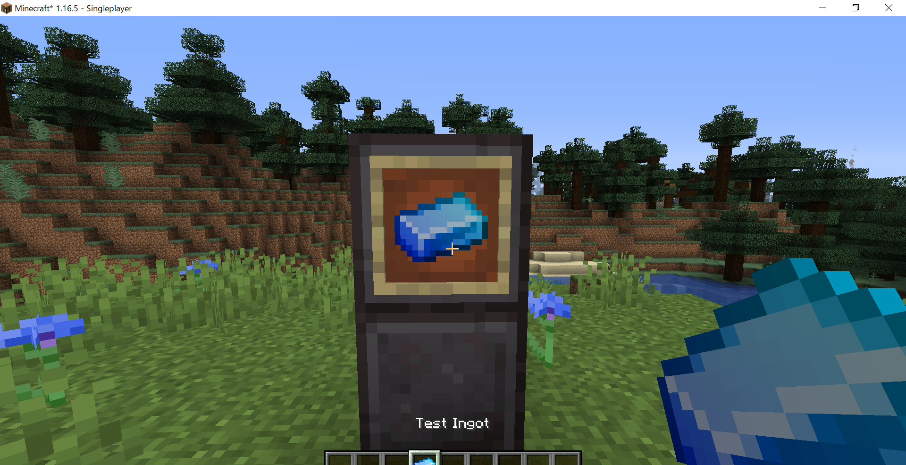

MOD作成 - 簡単なアイテムを追加する
目次は右上の「≡」から！
ModIdやメインクラスのjavaファイル名などの各自で異なる部分はいちいち説明しないのでご注意を。
アイテムのクラス
左のPackage Explorerから「src/main/java > com.masec.new_mod」を右クリック、「New > Package」を押します。
Name:の「com.masec.new_mod」の右に「.item」を書き足して「Finish」
作った「com.masec.new_mod.item」を右クリックして「New > Class」を押します。
クラス名はアイテム名と揃えます。今回は「TestIngot」にしました。

クラスのコード
作られたファイルを編集して、こうなります。
package com.masec.newmod.item;
import net.minecraft.item.Item;
import net.minecraft.item.ItemGroup;
public class TestIngot extends Item {
public TestIngot() {
super(new Properties().tab(ItemGroup.TAB_MISC));
}
}書き換える場所をマーカーで示しました。
各自で違うところをマーカーしたやつ
package com.masec.newmod.item;
import net.minecraft.item.Item;
import net.minecraft.item.ItemGroup;
public class TestIngot extends Item {
public TestIngot() {
super(new Properties().tab(ItemGroup.TAB_MISC));
}
}
桃色でマーカーしたところはクリエイティブインベントリのカテゴリタブを指定する部分です。以下から選んでください。
| 変数 | 概要 |
|---|---|
| TAB_BUILDING_BLOCKS | 建築ブロック |
| TAB_DECORATIONS | 装飾ブロック |
| TAB_REDSTONE | レッドストーン |
| TAB_MISC | その他 |
| TAB_TRANSPORTATION | 運送 |
| TAB_COMBAT | 戦闘 |
| TAB_TOOLS | 道具 |
| TAB_FOOD | 食料 |
| TAB_BREWING | 醸造 |
アイテムを登録
アイテムのパッケージを追加したときと同様に、
左のPackage Explorerから「src/main/java > com.masec.new_mod」を右クリック、「New > Package」を押します。
Name:の「com.masec.new_mod」の右に「.init」を書き足して「Finish」
そしてまた「com.masec.new_mod.init」を右クリックしてクラスを新規作成します。クラス名は「ItemInit」です。
クラスのコード
これもまた、作られたファイルを編集してこうなります。
package com.masec.newmod.init;
import com.masec.newmod.NewMod;
import com.masec.newmod.item.TestIngot;
import net.minecraft.item.Item;
import net.minecraftforge.fml.RegistryObject;
import net.minecraftforge.registries.DeferredRegister;
import net.minecraftforge.registries.ForgeRegistries;
public class ItemInit {
public static final DeferredRegister<Item> ITEMS = DeferredRegister.create(ForgeRegistries.ITEMS, NewMod.MOD_ID);
public static final RegistryObject<Item> TEST_INGOT = ITEMS.register("test_ingot", () -> new TestIngot());
}
書き換える場所をマーカーで示しました。
各自で違うところをマーカーしたやつ
package com.masec.newmod.init;
import com.masec.newmod.NewMod;
import com.masec.newmod.item.TestIngot;
import net.minecraft.item.Item;
import net.minecraftforge.fml.RegistryObject;
import net.minecraftforge.registries.DeferredRegister;
import net.minecraftforge.registries.ForgeRegistries;
public class ItemInit {
public static final DeferredRegister<Item> ITEMS = DeferredRegister.create(ForgeRegistries.ITEMS, NewMod.MOD_ID);
public static final RegistryObject<Item> TEST_INGOT = ITEMS.register("test_ingot", () -> new TestIngot());
}
桃色でマーカーしたところはこのファイルで初めて定義しています。雰囲気を合わせて自分のものに置き換えてください(大文字とか) 「"test_ingot"」のほうはコマンドなどで使われる、アイテムのidとなります。
イベントバス
これがないと追加されないらしいです。メインクラスのファイルに少し書き加えます。
各自で名前が違うと思いますが「NewMod.java」を開きます。
package com.masec.newmod;
import org.apache.logging.log4j.LogManager;
import org.apache.logging.log4j.Logger;
import com.masec.newmod.init.ItemInit;
import net.minecraftforge.common.MinecraftForge;
import net.minecraftforge.eventbus.api.IEventBus;
import net.minecraftforge.fml.common.Mod;
import net.minecraftforge.fml.event.lifecycle.FMLCommonSetupEvent;
import net.minecraftforge.fml.javafmlmod.FMLJavaModLoadingContext;
// The value here should match an entry in the META-INF/mods.toml file
@Mod(NewMod.MOD_ID)
public class NewMod {
// Directly reference a log4j logger.
public static final Logger LOGGER = LogManager.getLogger();
public static final String MOD_ID = "new_mod";
public NewMod() {
IEventBus bus = FMLJavaModLoadingContext.get().getModEventBus();
bus.addListener(this::setup);
ItemInit.ITEMS.register(bus);
// Register ourselves for server and other game events we are interested in
MinecraftForge.EVENT_BUS.register(this);
}
private void setup(final FMLCommonSetupEvent event) {
// some preinit code
}
}
これを書き加えて終わりです。上のほうは各自で書き換える部分がありますね。
リソース
Package Explorerから「src/main/resources」を右クリックしてパッケージを作ります。名前は「assets.new_mod.lang」のようにします。
同様に、modelsとtexuresも追加します。
テキスト
「assets.new_mod.lang」を右クリックして「New > File」を選択して「en_us.json」ファイルを作成します

別のエディタで開いてEclipseの画面に以下のウィンドウが出てきたら下にチェック入れてOKするかそもそもCancelするといいと思います。
Eclipse内でJSONが使えるように拡張機能入れますかと聞いてます。わたしはVSCodeでよかったのでいらないってしました。
そして、JSONの中身はこんな感じです。
{
"item.new_mod.test_ingot": "Test Ingot"
}new_modのところがModId、test_ingotがアイテムのID、「Test Ingot」が表示する名前(英語)です。 日本語は同じところに「ja_jp.json」という名前でファイルを使って、表示する名前の欄だけ変えて同じJSONを書きます。
モデル/テクスチャ
「assets.new_mod.models」を右クリックして「assets.new_mod.models.item」という名前のパッケージを作ります。
そこに「test_ingot.json」を作ります。ファイル名はアイテムのIDです。
{
"parent": "item/generated",
"textures": {
"layer0":"new_mod:items/test_ingot"
}
}
Eclipseからちょっと出て、はじめに作ったフォルダの「src/main/resources/assets/new_mod/textures」に
「items」フォルダを作り、テクスチャを入れます。テクスチャの名前は「test_ingot.png」のようにします。
最後はEclipseに戻り、「src/main/resources」を右クリックして「Refresh」します。
マイクラを起動して確認
このように、きれいなインゴットが追加できました。
参考サイト
・【マインクラフト Modding】1.16での自作Modの作り方 #4 アイテムの追加 - うまげーむさん
・【マインクラフト Modding】1.16での自作Modの作り方 #5 レシピ・クリエイティブタブの追加 - うまげーむさん